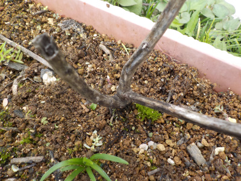
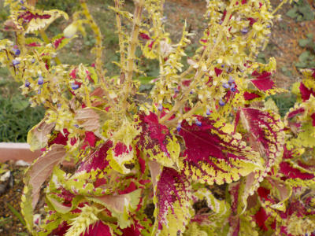
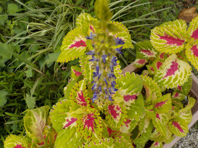
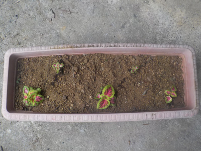
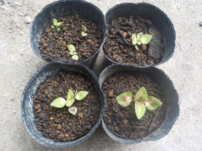
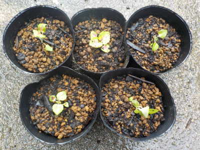
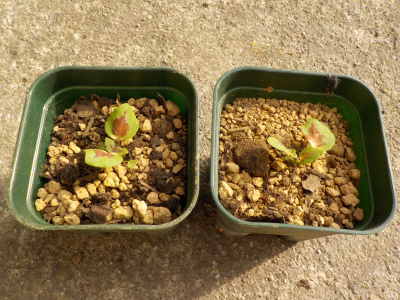
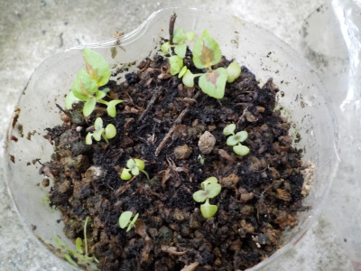
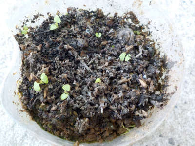

遊びで植物を育てよう
2022/09/06
今年はコリウスが発芽しませんでした。

去年のコリウスの枯草です。この周りに種が落ちて、発芽してくれると期待していたんですがダメでした。
我が家のコリウスが絶えてしまった。
今ホームセンターで激安で販売しているコリウスを買って種を採取すればローコストですが、コリウスがとっても欲しいってわけではないので、無くてもいいかな。
【コリウスTOP】 【花TOP】 【園芸TOP】
2021/11/13
コリウスの種がほとんど落ちてる。

今年もコリウスの種を採取しようかと思ったんですが、ほとんど落ちてありませんでした。
ちょっとだったら取らなくていいかな。
運がよければ落ちた種が芽を出すでしょう。悪かったら諦めます。コリウスが絶対必要ってことはないので。
【コリウスTOP】 【花TOP】 【園芸TOP】
2021/09/05
コリウスの花が咲いたので受粉しました。

コリウスの花が咲きました。花が咲くと派手になっていいですね。
去年種を採って蒔いたコリウスなので、親と違う色になるんじゃないかと楽しみにしていたんですが、同じでした。
これはこれで綺麗なので、まあいいかな。
今年も種を採って来年蒔こうと思うので、花の受粉作業をしました。
【コリウスTOP】 【花TOP】 【園芸TOP】
2021/06/26
プランターにコリウスを植えました。

ポットで少し大きくした苗をプランターに植えました。
手前の2つは植えやすかったですが、残りは小さくて植えにくかったです。
小さい苗は大雨がふったら倒れそうです。

ペットボトルの苗床からポットに移しました。種蒔きで育った苗はこれでおしまいです。
大きくなって植えやすくなったらプランターに植えようと思います。
【コリウスTOP】 【花TOP】 【園芸TOP】
2021/06/13
種蒔きで育ったコリウスを鉢上げしました。

ペットボトルに種蒔きしたコリウスが大きくなったので、ポットに移植しました。
以前に2本移植していたので、合計7本になります。
大きくなったら何処に植えようかな。
【コリウスTOP】 【花TOP】 【園芸TOP】
2021/05/23
ペットボトルのコリウス2本を鉢上げしました。

ちょっと大きくなった2本を鉢上げしました。
種を採った株は緑の葉っぱで中央が赤だったので、同じようなコリウスになりそうです。
まったく同じだったらちょっとつまらないかな。
【コリウスTOP】 【花TOP】 【園芸TOP】
2021/05/15
種蒔きしたコリウスの葉に模様が出ました。

まだ小さな葉っぱですが、模様が出ました。
間違いなくコリウスの葉っぱですね。
実生のコリウスはどんなのになるんでしょうね。楽しみです。
【コリウスTOP】 【花TOP】 【園芸TOP】
2021/04/24
これはコリウスの双葉かな。

コリウスの花柄をまいたところから芽が出ました。
穂に種が入っている感じはなかったんですが、あったんですね。
種がめちゃくちゃ小さかったのかな。
成長してどんな葉色や形になるかわかりませんが、今年は苗を買わないでコレを育てようと思っています。
【コリウスTOP】 【花TOP】 【園芸TOP】
2021/03/28
コリウスの花柄を土に蒔きました。

去年採ったコリウスの花柄をペットボトルに蒔きました。
蒔いたといっても湿った土の上に乗せただけです。
花柄に種がある感じはしないんですが、ひょっとしたら何粒かあるかもしれないので挑戦しました。
花柄がしっかり枯れちゃって、ボロボロになってホコリみたいです。
【コリウスTOP】
【花TOP】
【園芸TOP】
コリウスは大葉みたいな花ですが、大葉のような大きな穂ができません。
【おいしいものを食べよう。】【たくさん寝よう。】
【ソロ活をしよう!】【季節感のあることをしよう。】【動画視聴はほどほどに。】【当サイトの全てのコンテンツは無断転載禁止です。】